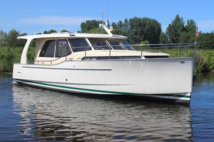

B-Atlas Boat Guide · GRNL-33
Greenline 33 Diesel / Hybrid / Electric Sedan
2010–2024
The Greenline 33 is a Slovenian solar-assisted sedan cruiser built around an efficient J&J-designed hull and single shaft line. It was offered in diesel, diesel-electric hybrid and later electric configurations; B-Atlas treats those propulsion packages as variations of one model, not separate boat models.

- Length
- 32.78 ft
- Beam
- 11.45 ft
- Draft
- 2.3 ft
- Hull behaviour
- Semi-Displacement
- Fuel
- Diesel
- Propulsion
- Shaft
- Engine configuration
- Single shaft drive; diesel, hybrid and electric propulsion options
- Boat family
- Cruiser
- Construction
- Fiberglass
Best for
- Couples seeking efficient inland and coastal cruising
- Owners who value solar-supported house systems and quiet anchoring
- Buyers comfortable understanding modern electrical systems
Trade-offs
- Hybrid/electric versions add battery, inverter and control-system complexity
- Propulsion and electrical specifications changed substantially over the production run
- Wide cabin house produces asymmetric/limited side-deck compromises on some layouts
Known concerns
- No model-specific concern has been promoted to B-Atlas’s evidence threshold. This does not mean the model has no age-, condition- or hull-specific risks.
Inspection focus
- Verify diesel, hybrid or electric propulsion package and battery age
- Inspect shaft, rudder, propeller-protection fins and stern gear
- Inspect solar panels, inverters, chargers and battery-management systems
- Inspect windows, doors and roof penetrations for leakage
- Verify tankage and electrical configuration by production year
Continue researching
Related boat models
Greenline 39 Diesel / Hybrid / Electric Sedan
39.42 ft · Semi-Displacement
Beneteau Swift Trawler 30 Flybridge
32.75 ft · Semi-Displacement
Cape Dory 33 PowerYacht Flybridge
32.83 ft · Planing / Modified-V
Bayliner 3218 Motoryacht Flybridge Motor Yacht
32.67 ft · Semi-Displacement
Bayliner 3258 Command Bridge Command Bridge Cruiser
32.92 ft · Planing
Bayliner 3388 Motor Yacht Flybridge Motor Yacht
32.92 ft · Semi-Displacement
About this record
B-Atlas preserves uncertainty: missing information remains unknown rather than being treated as a negative. Specifications and guidance describe the model record; individual boats can differ by year, equipment, refit and condition.